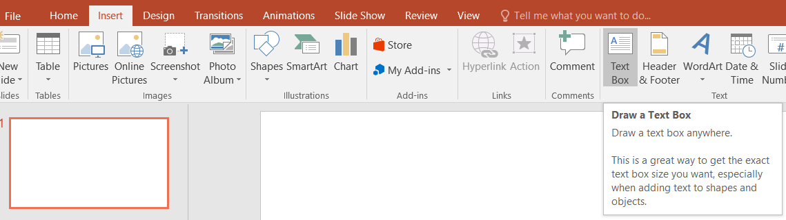
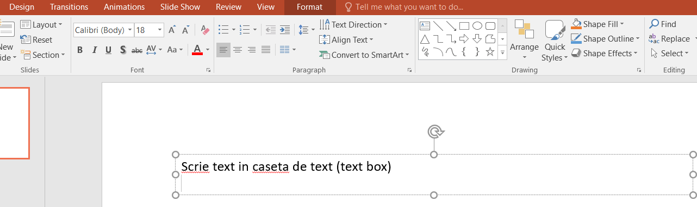
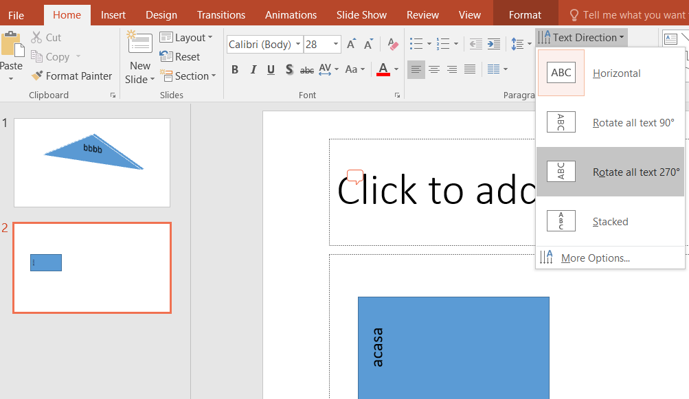
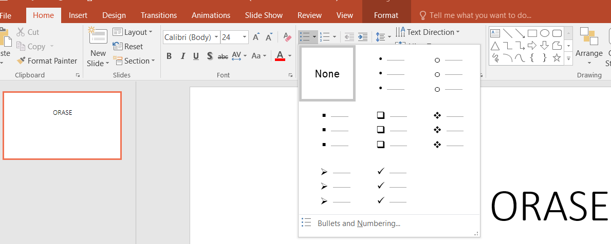
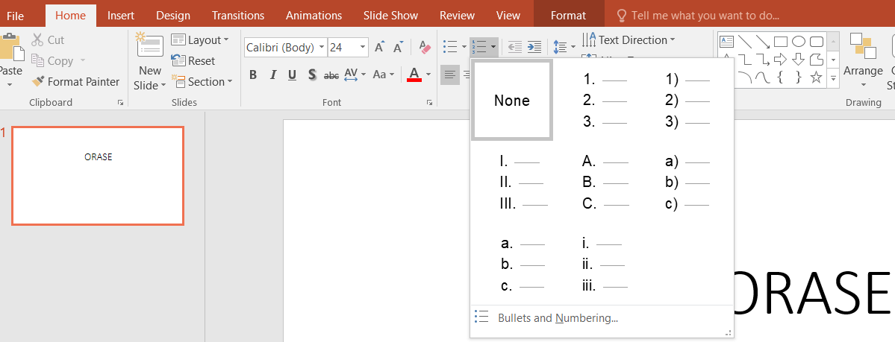

Adăugarea unui text la un diapozitiv
Se tastează textul în substituenţii de titlu (Title) , subtitlu (Subtitle) şi text (Text) după caz, sau în casete text (Text Box) adăugate astfel:Fila inserare (Insert) → grupul text (text) → clic pe casetă text (Text Box) → clic pe diapozitiv → tastaţi textul dorit


Formatarea textului
Atunci când selectați text și alegeți un format, treceți cu indicatorul peste o opțiune de meniu pentru a vedea o examinare în direct în diapozitiv. Opțiunile de formatare includ:
- Culoare font - Alegeți o culoare de font pentru text.
- Numerotare sau Marcatori - Creați liste utilizând numere sau marcatori.
- Aliniere text pe verticală - Textul poate fi sus, la mijloc sau jos în caseta de încadrare.
- Aliniere text pe orizontală la stânga, la centru, la dreapta sau aliniere stânga-dreapta.
- Orientarea textului - Schimbați direcția textului.

Adăugarea de marcatori sau numere unei forme
Fila de pornire (Home) → grupul paragraf (Paragraph) → clic pe marcatori (Bullets) 
sau pe numere (Numbering).

 din dreapta.
din dreapta. Formatarea unei casete de text
Fila inserare (Insert) → grupul text (Text) → butonul casetă text (Text Box) → clic pe diapozitiv → tastare text şi dimensionare casetă text → se aplica opţiunile de formatare text şi paragraf ca în Word (tip, mărime, aliniere, culoare, etc.)